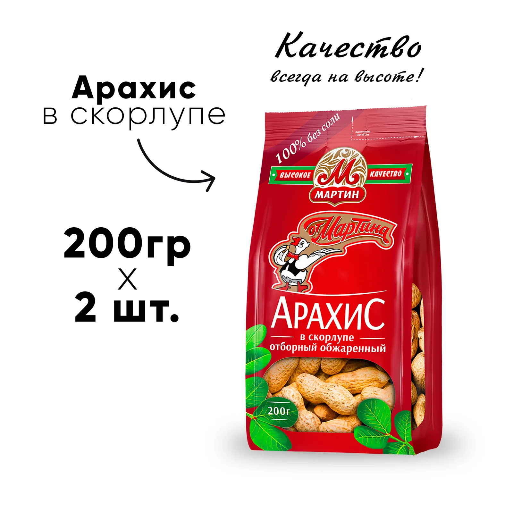
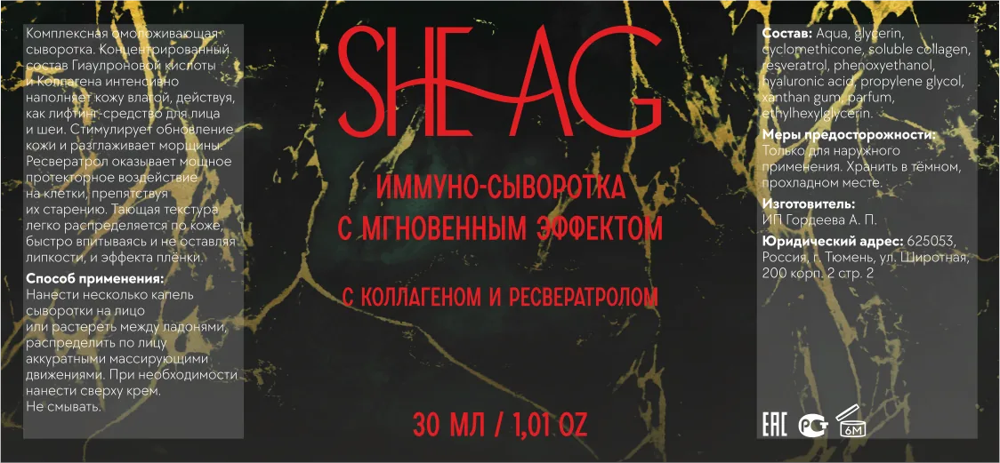

Портфолио
Хороший дизайн заметен сразу, плохой никогда, заметили?
А теперь прочтите этот текст мелким шрифтом и спросите себя, что вы хотите тут увидеть. Тут есть всё: без лишних слов нажмите на нужный раздел.

Избранное
С чего лучше начать просмотр
Несколько проектов с разным характером, чтобы сразу увидеть диапазон работ и выбрать близкое по задаче направление.


РЖД
РЖД здание душевых — визуализации
Подборка интерьерных визуализаций и планов для проекта РЖД здание душевых — визуализации.


Реализованные бренды
Фото реализованных брендов
Подборка фото и ретуши для проекта Фото реализованных брендов.
Как устроено
Портфолио читается спокойнее
Главная страница помогает быстро понять структуру сайта и перейти к нужному типу работы без длинного вступления.
Быстрый вход
На первом экране сразу реальные проекты
Вместо декоративной заставки главная показывает настоящие работы и сразу задает правильное впечатление о портфолио.
Понятная навигация
Разделы собраны по понятным направлениям
Графика, интерьер, печать и ретушь вынесены в ясные точки входа, чтобы не приходилось искать нужный тип проекта вручную.
Масштаб архива
Цифры помогают быстро оценить объем
Несколько коротких метрик на первом экране дают ощущение масштаба, но не перегружают страницу лишними деталями.
Направления
Разделы портфолио
Работы сгруппированы по задачам, чтобы можно было сразу перейти в нужный тип дизайна и уже там смотреть проекты глубже.
4 подраздела
Графика
Коммерческая графика с акцентом на карточки маркетплейсов, рекламные визуалы, логотипы и презентационные подборки.
1 подраздел
Интерьер
Визуализации и планы интерьерных пространств, собранные в отдельные проектные страницы.
3 подраздела
Печать и упаковка
Этикетки, наружная реклама и печатные макеты, подготовленные как самостоятельные проекты или коллекции.
1 подраздел
Фото и ретушь
Фото реализованных брендов и продуктовая ретушь, пригодные для web-публикации.
Нужен быстрый переход к работам?
Можно перейти в полный каталог или сразу открыть контакты, если нужный формат задачи уже понятен.